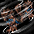

2005～ ウルフマン スキル一覧
2018/05/29 ウルフマンスキル改変前のデータ。
改変後は、2018/05/29 バランスパッチ反映版を参考にしてください。
| ウルフクロー | ||||||||||||||
|---|---|---|---|---|---|---|---|---|---|---|---|---|---|---|
| スキル難易度 | 1 | |||||||||||||
| 必要スキル | なし |
|||||||||||||
| スキル説明 | 前足の爪で敵を攻撃する。 | |||||||||||||
| レベル | 1 | 2 | 3 | 4 | 5 | 6 | 7 | 8 | 9 | 10 | 20 | 30 | 40 | 50 |
| 消費CP | 0 | 0 | 0 | 0 | 0 | 0 | 0 | 0 | 0 | 0 | 0 | 0 | 0 | 0 |
| 獲得CP | 2.4 | 2.8 | 3.2 | 3.6 | 4 | 4.4 | 4.8 | 5.2 | 5.6 | 6 | 10 | 14 | 18 | 22 |
| 物理ダメージ | 2% | 4% | 6% | 8% | 10% | 12% | 14% | 16% | 18% | 20% | 40% | 60% | 80% | 100% |
| 速度 | 18flame | |||||||||||||
| 最大射程距離 | 1m | |||||||||||||
| アイアンクロー | ||||||||||||||
|---|---|---|---|---|---|---|---|---|---|---|---|---|---|---|
| スキル難易度 | 2 | |||||||||||||
| 必要スキル | ウルフクロー[6] | |||||||||||||
| スキル説明 | 魔法の力で足爪を鋼鉄のように固くして敵を攻撃する。 | |||||||||||||
| レベル | 1 | 2 | 3 | 4 | 5 | 6 | 7 | 8 | 9 | 10 | 20 | 30 | 40 | 50 |
| 消費CP | 6.5 | 8 | 9.5 | 11 | 12.5 | 14 | 15.5 | 17 | 18.5 | 20 | 35 | 50 | 65 | 80 |
| 消費CP | 6.5 | 8 | 9.5 | 11 | 12.5 | 14 | 15.5 | 17 | 18.5 | 20 | 35 | 50 | 65 | 80 |
| 獲得CP | 2.5 | 5 | 7.5 | 10 | 12.5 | 15 | 17.5 | 20 | 22.5 | 25 | 50 | 75 | 100 | 125 |
| 物理ダメージ | 14% | 18% | 22% | 26% | 30% | 34% | 38% | 42% | 46% | 50% | 90% | 130% | 170% | 210% |
| 速度 | 18flame | |||||||||||||
| 最大射程距離 | 1m | |||||||||||||
| フレイムクロー | ||||||||||||||
|---|---|---|---|---|---|---|---|---|---|---|---|---|---|---|
| スキル難易度 | 2 | |||||||||||||
| 必要スキル | アイアンクロー[3] |
|||||||||||||
| スキル説明 | 魔法の炎を足爪に宿して敵を攻撃する。 | |||||||||||||
| レベル | 1 | 2 | 3 | 4 | 5 | 6 | 7 | 8 | 9 | 10 | 20 | 30 | 40 | 50 |
| 消費CP | 11 | 12 | 13 | 14 | 15 | 16 | 17 | 18 | 19 | 20 | 30 | 40 | 50 | 60 |
| 獲得CP | 1.5 | 3 | 4.5 | 6 | 7.5 | 9 | 10.5 | 12 | 13.5 | 15 | 30 | 45 | 60 | 75 |
| 物理ダメージ | 2% | 4% | 6% | 8% | 10% | 12% | 14% | 16% | 18% | 20% | 40% | 60% | 80% | 100% |
| 火属性攻撃力 | 8〜9 | 10〜12 | 13〜16 | 15〜19 | 18〜23 | 20〜26 | 23〜30 | 25〜33 | 28〜37 | 30〜40 | 55〜75 | 80〜110 | 105〜145 | 130〜180 |
| 速度 | 18flame | |||||||||||||
| 最大射程距離 | 1m | |||||||||||||
| グランドクロー | ||||||||||||||
|---|---|---|---|---|---|---|---|---|---|---|---|---|---|---|
| スキル難易度 | 3 | |||||||||||||
| 必要スキル |
アイアンクロー[6]
|
|||||||||||||
| スキル説明 | 大ぶりで殴り、前方の広い範囲の敵にダメージを与える。 | |||||||||||||
| レベル | 1 | 2 | 3 | 4 | 5 | 6 | 7 | 8 | 9 | 10 | 20 | 30 | 40 | 50 |
| 消費CP | 37 | 39 | 41 | 43 | 45 | 47 | 49 | 51 | 53 | 55 | 75 | 95 | 115 | 135 |
| 獲得CP | 2.5 | 5 | 7.5 | 10 | 12.5 | 15 | 17.5 | 20 | 22.5 | 25 | 50 | 75 | 100 | 125 |
| 物理ダメージ | 4% | 8% | 12% | 16% | 20% | 24% | 28% | 32% | 36% | 40% | 80% | 120% | 160% | 200% |
| 最大射程距離 | 1.01 | 1.02 | 1.03 | 1.04 | 1.05 | 1.06 | 1.07 | 1.08 | 1.09 | 1.1 | 1.2 | 1.3 | 1.4 | 1.5 |
| 攻撃範囲 | 2.02 | 2.04 | 2.06 | 2.08 | 2.1 | 2.12 | 2.14 | 2.16 | 2.18 | 2.2 | 2.4 | 2.6 | 2.8 | 3 |
| 速度 | 18flame | |||||||||||||
 |
チェーンドクロー | |||||||||||||
|---|---|---|---|---|---|---|---|---|---|---|---|---|---|---|
| スキル難易度 | 4 | |||||||||||||
| 必要スキル |
ウルフクロー[18] アイアンクロー[12] グランドクロー[6]
|
|||||||||||||
| スキル説明 | 敵に素早い動きで連続攻撃を行う。 | |||||||||||||
| レベル | 1 | 2 | 3 | 4 | 5 | 6 | 7 | 8 | 9 | 10 | 20 | 30 | 40 | 50 |
| 消費CP | 78 | 81 | 84 | 87 | 90 | 93 | 96 | 99 | 102 | 105 | 135 | 165 | 195 | 225 |
| 獲得CP | 4 | 8 | 12 | 16 | 20 | 24 | 28 | 32 | 36 | 40 | 80 | 120 | 160 | 200 |
| 物理ダメージ | 3.5% | 7% | 10.5% | 14% | 17.5% | 21% | 24.5% | 28% | 31.5% | 35% | 70% | 105% | 140% | 175% |
| 攻撃速度(回/秒) | 1.02 | 1.07 | 1.11 | 1.16 | 1.2 | 1.24 | 1.29 | 1.33 | 1.38 | 1.42 | 1.87 | 2 | 2 | 2 |
| 攻撃回数(最大7回) | 2 | 2 | 2 | 3 | 3 | 3 | 4 | 4 | 4 | 5 | 7 | 7 | 7 | 7 |
| 速度 | 18flame | |||||||||||||
| 最大射程距離 | 1.2m | |||||||||||||
| 命中率 | -0.3% | |||||||||||||
| 回避率 | -3% | |||||||||||||
 |
ウルフファング | |||||||||||||
|---|---|---|---|---|---|---|---|---|---|---|---|---|---|---|
| スキル難易度 | 1 | |||||||||||||
| 必要スキル |
ウィザード:チャージング[3]
|
|||||||||||||
| スキル説明 | 顎で敵を噛みちぎる。 | |||||||||||||
| レベル | 1 | 2 | 3 | 4 | 5 | 6 | 7 | 8 | 9 | 10 | 20 | 30 | 40 | 50 |
| 消費CP | 0 | 0 | 0 | 0 | 0 | 0 | 0 | 0 | 0 | 0 | 0 | 0 | 0 | 0 |
| 物理ダメージ | 1.5% | 3% | 4.5% | 6% | 7.5% | 9% | 10.5% | 12% | 13.5% | 15% | 30% | 45% | 60% | 75% |
| 命中率 | 0.1% | 0.2% | 0.3% | 0.4% | 0.5% | 0.6% | 0.7% | 0.8% | 0.9% | 1% | 2% | 3% | 4% | 5% |
| 最大射程距離 | 0.75m | |||||||||||||
| ポイズンファング | ||||||||||||||
|---|---|---|---|---|---|---|---|---|---|---|---|---|---|---|
| スキル難易度 | 2 | |||||||||||||
| 必要スキル |
ウルフファング[6]
|
|||||||||||||
| スキル説明 | 毒の魔法を付与した牙で敵を攻撃し、敵を毒状態にする。 | |||||||||||||
| レベル | 1 | 2 | 3 | 4 | 5 | 6 | 7 | 8 | 9 | 10 | 20 | 30 | 40 | 50 |
| 消費CP | 20 | 20 | 20 | 20 | 20 | 20 | 20 | 20 | 20 | 20 | 20 | 20 | 20 | 20 |
| 獲得CP | 1.2 | 2.4 | 3.6 | 4.8 | 6 | 7.2 | 8.4 | 9.6 | 10.8 | 12 | 24 | 36 | 48 | 60 |
| 物理ダメージ | 1.5% | 3% | 4.5% | 6% | 7.5% | 9% | 10.5% | 12% | 13.5% | 15% | 30% | 45% | 60% | 75% |
| 毒ダメージ | 3 | 5 | 7 | 9 | 11 | 13 | 15 | 17 | 19 | 21 | 41 | 61 | 81 | 101 |
| 毒持続時間 | 2.2秒 | 2.4秒 | 2.6秒 | 2.8秒 | 3秒 | 3.2秒 | 3.4秒 | 3.6秒 | 3.8秒 | 4秒 | 6秒 | 8秒 | 10秒 | 12秒 |
| 最大射程距離 | 0.75m | |||||||||||||
| ハイドロフォビア | ||||||||||||||
|---|---|---|---|---|---|---|---|---|---|---|---|---|---|---|
| スキル難易度 | 3 | |||||||||||||
| 必要スキル |
ポイズンファング[6]
|
|||||||||||||
| スキル説明 | 敵の死角に噛み付いて、混乱状態にさせる。 | |||||||||||||
| レベル | 1 | 2 | 3 | 4 | 5 | 6 | 7 | 8 | 9 | 10 | 20 | 30 | 40 | 50 |
| 消費CP | 40 | 40 | 40 | 40 | 40 | 40 | 40 | 40 | 40 | 40 | 40 | 40 | 40 | 40 |
| 獲得CP | 2 | 4 | 6 | 8 | 10 | 12 | 14 | 16 | 18 | 20 | 40 | 60 | 80 | 100 |
| 物理ダメージ | 12% | 14% | 16% | 18% | 20% | 22% | 24% | 26% | 28% | 30% | 50% | 70% | 90% | 110% |
| 敵混乱持続時間(秒) | 3.3 | 3.6 | 3.9 | 4.2 | 4.5 | 4.8 | 5.1 | 5.4 | 5.7 | 6 | 9 | 12 | 15 | 18 |
| 最大射程距離 | 0.75m | |||||||||||||
| バイト ハンギング | ||||||||||||||
|---|---|---|---|---|---|---|---|---|---|---|---|---|---|---|
| スキル難易度 | 3 | |||||||||||||
| 必要スキル |
ウルフファング[18]
|
|||||||||||||
| スキル説明 | 敵を噛み続け、敵の体力を徐々に減少させる | |||||||||||||
| レベル | 1 | 2 | 3 | 4 | 5 | 6 | 7 | 8 | 9 | 10 | 20 | 30 | 40 | 50 |
| 消費CP | 54 | 58 | 62 | 66 | 70 | 74 | 78 | 82 | 86 | 90 | 130 | 170 | 210 | 250 |
| 獲得CP | 12.5 | 15 | 17.5 | 20 | 22.5 | 25 | 27.5 | 30 | 32.5 | 35 | 60 | 85 | 110 | 135 |
| 物理ダメージ | 17% | 19% | 21% | 23% | 25% | 27% | 29% | 31% | 33% | 35% | 55% | 75% | 95% | 115% |
| 毎秒攻撃回数 | 0.5 | 0.6 | 0.7 | 0.8 | 0.9 | 1 | 1.1 | 1.2 | 1.3 | 1.4 | 2 | 2 | 2 | 2 |
| 持続時間(秒) | 11 | 12 | 13 | 14 | 15 | 16 | 17 | 18 | 19 | 20 | 30 | 40 | 50 | 60 |
| 敵の移動速度の低下 | -50% | |||||||||||||
| 自分の回避率の低下 | -15% | |||||||||||||
| 最大射程距離 | 0.75m | |||||||||||||
| バンパイアリックバイト | ||||||||||||||
|---|---|---|---|---|---|---|---|---|---|---|---|---|---|---|
| スキル難易度 | 4 | |||||||||||||
| 必要スキル |
バイトハンギング[3] ウルフファング[24]
|
|||||||||||||
| スキル説明 |
敵の血を吸い、自分の体力を回復する。 |
|||||||||||||
| レベル | 1 | 2 | 3 | 4 | 5 | 6 | 7 | 8 | 9 | 10 | 20 | 30 | 40 | 50 |
| 消費CP | 64 | 68 | 72 | 76 | 80 | 84 | 88 | 92 | 96 | 100 | 140 | 180 | 220 | 260 |
| 獲得CP | 100 | 100 | 100 | 100 | 100 | 100 | 100 | 100 | 100 | 100 | 100 | 100 | 100 | 100 |
| 物理ダメージ | -50% | |||||||||||||
| 体力回復量(ダメージ*[n]％) | 20.6% | 21% | 21.5% | 22% | 22.5% | 23% | 23.5% | 24% | 24.5% | 25% | 30% | 35% | 40% | 45% |
| 最大射程距離 | 0.75m | |||||||||||||
| ローリングクラッシュ | ||||||||||||||
|---|---|---|---|---|---|---|---|---|---|---|---|---|---|---|
| スキル難易度 | 2 | |||||||||||||
| 必要スキル |
アイアンクロー[3] クローローラー[3]
|
|||||||||||||
| スキル説明 | 体を丸めて回転しながら敵に突進して攻撃する。 | |||||||||||||
| レベル | 1 | 2 | 3 | 4 | 5 | 6 | 7 | 8 | 9 | 10 | 20 | 30 | 40 | 50 |
| 消費CP | 16.5 | 18 | 19.5 | 21 | 22.5 | 24 | 25.5 | 27 | 28.5 | 30 | 45 | 60 | 75 | 90 |
| 獲得CP | 2.2 | 4.4 | 6.6 | 8.8 | 11 | 13.2 | 15.4 | 17.6 | 19.8 | 22 | 44 | 66 | 88 | 110 |
| 物理ダメージ | 24% | 28% | 32% | 36% | 40% | 44% | 48% | 52% | 56% | 60% | 100% | 140% | 180% | 220% |
| 最小射程距離(m) | 0.8 | |||||||||||||
| 最大射程距離(m) | 3.51 | 3.52 | 3.53 | 3.54 | 3.55 | 3.56 | 3.57 | 3.58 | 3.59 | 3.6 | 3.7 | 3.8 | 3.9 | 4 |
| 効果範囲(m) | 0.6 | |||||||||||||
|  | クローローラー | |||||||||||||
|---|---|---|---|---|---|---|---|---|---|---|---|---|---|---|
| スキル難易度 | 2 | |||||||||||||
| 必要スキル |
ウルフクロー[6]
|
|||||||||||||
| スキル説明 | 体を丸めて回転しながら、周囲の敵を攻撃する。 | |||||||||||||
| レベル | 1 | 2 | 3 | 4 | 5 | 6 | 7 | 8 | 9 | 10 | 20 | 30 | 40 | 50 |
| 消費CP | 11 | 12 | 13 | 14 | 15 | 16 | 17 | 18 | 19 | 20 | 30 | 40 | 50 | 60 |
| 獲得CP | 1.4 | 2.8 | 4.2 | 5.6 | 7 | 8.4 | 9.8 | 11.2 | 12.6 | 14 | 28 | 42 | 56 | 70 |
| 物理ダメージ | 2% | 4% | 6% | 8% | 10% | 12% | 14% | 16% | 18% | 20% | 40% | 60% | 80% | 100% |
| 最大射程距離(m) | 0.95 | |||||||||||||
| 効果範囲(m) | 武器射程距離 * 1.2 | |||||||||||||
 |
バーニングオーブ | |||||||||||||
|---|---|---|---|---|---|---|---|---|---|---|---|---|---|---|
| スキル難易度 | 3 | |||||||||||||
| 必要スキル |
クローローラー[6] フレイムクロー[6]
|
|||||||||||||
| スキル説明 | 全身に炎を纏い、体を回転して炎のボールを作り出して敵に飛ばす。 | |||||||||||||
| レベル | 1 | 2 | 3 | 4 | 5 | 6 | 7 | 8 | 9 | 10 | 20 | 30 | 40 | 50 |
| 消費CP | 42 | 44 | 46 | 48 | 50 | 52 | 54 | 56 | 58 | 60 | 80 | 100 | 120 | 140 |
| 獲得CP | 2.5 | 5 | 7.5 | 10 | 12.5 | 15 | 17.5 | 20 | 22.5 | 25 | 50 | 75 | 100 | 125 |
| 火属性攻撃力 | 14~54 | 18~58 | 22~62 | 26~66 | 30~70 | 34~74 | 38~78 | 42~82 | 46~86 | 50~90 | 90~130 | 130~170 | 170~210 | 210~250 |
| 最大射程距離(m) | 3.5m | |||||||||||||
| 効果範囲(m) | 1m | |||||||||||||
 |
バウンシングリニア | |||||||||||||
|---|---|---|---|---|---|---|---|---|---|---|---|---|---|---|
| スキル難易度 | 4 | |||||||||||||
| 必要スキル |
ローリングクラッシュ[12]、クローローラー[12]
|
|||||||||||||
| スキル説明 | 敵に突進して攻撃し、敵にぶつかると次の敵に反射する。 | |||||||||||||
| レベル | 1 | 2 | 3 | 4 | 5 | 6 | 7 | 8 | 9 | 10 | 20 | 30 | 40 | 50 |
| 消費CP | 85 | 90 | 95 | 100 | 105 | 110 | 115 | 120 | 125 | 130 | 180 | 230 | 280 | 330 |
| 獲得CP | 4 | 8 | 12 | 16 | 20 | 24 | 28 | 32 | 36 | 40 | 80 | 120 | 160 | 200 |
| 物理ダメージ | 54% | 58% | 62% | 66% | 70% | 74% | 78% | 82% | 86% | 90% | 130% | 170% | 210% | 250% |
| 命中率補正値 | 0.2% | 0.4% | 0.6% | 0.8% | 1% | 1.2% | 1.4% | 1.6% | 1.8% | 2% | 4% | 6% | 8% | 10% |
| 反射回数 | 2 | 2 | 2 | 2 | 3 | 3 | 3 | 3 | 3 | 4 | 6 | 8 | 10 | 12 |
| 最小射程距離(m) | 0.3 | |||||||||||||
| 最大射程距離(m) | 3 | |||||||||||||
| フラッシュタックル | ||||||||||||||
|---|---|---|---|---|---|---|---|---|---|---|---|---|---|---|
| スキル難易度 | 4 | |||||||||||||
| 必要スキル |
ローリングクラッシュ[12] グランドクロー[6]
|
|||||||||||||
| スキル説明 | 閃光の如き速さで瞬く間に敵に突進、足爪で攻撃を加える。 | |||||||||||||
| レベル | 1 | 2 | 3 | 4 | 5 | 6 | 7 | 8 | 9 | 10 | 20 | 30 | 40 | 50 |
| 消費CP | 70 | 75 | 80 | 85 | 90 | 95 | 100 | 105 | 110 | 115 | 165 | 215 | 265 | 315 |
| 獲得CP | 4 | 8 | 12 | 16 | 20 | 24 | 28 | 32 | 36 | 40 | 80 | 120 | 160 | 200 |
| 物理ダメージ | 5% | 10% | 15% | 20% | 25% | 30% | 35% | 40% | 45% | 50% | 100% | 150% | 200% | 250% |
| 光属性攻撃力 | 10~26 | 10~42 | 10~58 | 10~74 | 10~90 | 10~106 | 10~122 | 10~138 | 10~154 | 10~170 | 10~330 | 10~490 | 10~650 | 10~810 |
| 命中率補正値 | 3.1% | 3.2% | 3.3% | 3.4% | 3.5% | 3.6% | 3.7% | 3.8% | 3.9% | 4% | 5% | 6% | 7% | 8% |
| 致命打確率 | 5% | |||||||||||||
| 決定打確率 | 1% | |||||||||||||
| 敵暗闇持続時間 | 3秒(確率100%) | |||||||||||||
| 最小射程距離(m) | 1.5m | |||||||||||||
| 最大射程距離(m) | 4.5m | |||||||||||||
| 効果範囲(m) | 0.6m | |||||||||||||
| ムーンクライ | ||||||||||||||
|---|---|---|---|---|---|---|---|---|---|---|---|---|---|---|
| スキル難易度 | 1 | |||||||||||||
| 必要スキル |
ウルフファング[3]
|
|||||||||||||
| スキル説明 | 敵に恐怖を感じさせ、動けなくさせる狼の咆哮。 | |||||||||||||
| レベル | 1 | 2 | 3 | 4 | 5 | 6 | 7 | 8 | 9 | 10 | 20 | 30 | 40 | 50 |
| 必要CP | 5.1 | 5.2 | 5.3 | 5.4 | 5.5 | 5.6 | 5.7 | 5.8 | 5.9 | 6 | 7 | 8 | 9 | 10 |
| 獲得CP | 0.2 | 0.4 | 0.6 | 0.8 | 1 | 1.2 | 1.4 | 1.6 | 1.8 | 2 | 4 | 6 | 8 | 10 |
| 有効半径(m) | 3.15 | 3.3 | 3.45 | 3.6 | 3.75 | 3.9 | 4.05 | 4.2 | 4.35 | 4.5 | 6 | 7.5 | 9 | 10.5 |
| 敵麻痺発動確率 | 5秒ごとに50％ | |||||||||||||
| 敵麻痺持続時間 | 0.5秒 | 0.5秒 | 0.5秒 | 0.5秒 | 0.5秒 | 0.5秒 | 0.5秒 | 0.5秒 | 0.5秒 | 0.5秒 | 0.5秒 | 0.5秒 | 0.5秒 | 0.5秒 |
 |
フルムーン | |||||||||||||
|---|---|---|---|---|---|---|---|---|---|---|---|---|---|---|
| スキル難易度 | 2 | |||||||||||||
| 必要スキル |
ムーンクライ[6] ポィズンファング[3]
|
|||||||||||||
| スキル説明 | 恐怖の遠吠で敵の動きを鈍くする。 | |||||||||||||
| レベル | 1 | 2 | 3 | 4 | 5 | 6 | 7 | 8 | 9 | 10 | 20 | 30 | 40 | 50 |
| 必要CP | 15.5 | 16 | 16.5 | 17 | 17.5 | 18 | 18.5 | 19 | 19.5 | 20 | 25 | 30 | 35 | 40 |
| 獲得CP | 0.4 | 0.8 | 1.2 | 1.6 | 2 | 2.4 | 2.8 | 3.2 | 3.6 | 4 | 8 | 12 | 16 | 20 |
| 有効半径(m) | 2.2 | 2.4 | 2.6 | 2.8 | 3 | 3.2 | 3.4 | 3.6 | 3.8 | 4 | 6 | 8 | 10 | 12 |
| 対象敵レベル(キャラレベル+[n]) | 1 | 2 | 3 | 4 | 5 | 6 | 7 | 8 | 9 | 10 | 20 | 30 | 40 | 50 |
| 敵の移動速度低下確率 | 7秒ごとに85％ | |||||||||||||
| 敵の移動速度低下時間 | 7秒 | 8秒 | 9秒 | 10秒 | 11秒 | 12秒 | 13秒 | 14秒 | 15秒 | 16秒 | 17秒 | 18秒 | 19秒 | 20秒 |
| 敵の移動速度低下量 | 33% | |||||||||||||
 |
ヘイトリドグローリング | |||||||||||||
|---|---|---|---|---|---|---|---|---|---|---|---|---|---|---|
| スキル難易度 | 3 | |||||||||||||
| 必要スキル |
フルムーン[6] ウルフファング[12]
|
|||||||||||||
| スキル説明 |
小さな鳴き声で敵を戦意喪失させて、攻撃力と命中率を低下させる。 |
|||||||||||||
| レベル | 1 | 2 | 3 | 4 | 5 | 6 | 7 | 8 | 9 | 10 | 20 | 30 | 40 | 50 |
| 必要CP | 36 | 37 | 38 | 39 | 40 | 41 | 42 | 43 | 44 | 45 | 55 | 65 | 75 | 85 |
| 獲得CP | 10.2 | 10.4 | 10.6 | 10.8 | 11 | 11.2 | 11.4 | 11.6 | 11.8 | 12 | 14 | 16 | 18 | 20 |
| 有効半径(m) | 6 | 6 | 6 | 6 | 6 | 6 | 6 | 6 | 6 | 6 | 6 | 6 | 6 | 6 |
| 敵の低下確率 | 7秒ごとに50％ | |||||||||||||
| 敵の低下時間 | 5秒 | 6秒 | 7秒 | 8秒 | 9秒 | 10秒 | 11秒 | 12秒 | 13秒 | 14秒 | 15秒 | 16秒 | 17秒 | 18秒 |
| 敵の攻撃力低下量 | 10.8% | 11.6% | 12.4% | 13.2% | 14% | 14.8% | 15.6% | 16.4% | 17.2% | 18% | 26% | 34% | 42% | 50% |
| 敵命中率低下量 | 5.4% | 5.8% | 6.2% | 6.6% | 7% | 7.4% | 7.8% | 8.2% | 8.6% | 9% | 13% | 17% | 21% | 25% |
 |
ルナティックハウリング | |||||||||||||
|---|---|---|---|---|---|---|---|---|---|---|---|---|---|---|
| スキル難易度 | 4 | |||||||||||||
| 必要スキル |
フルムーン[12] ハイドロフォビア[6]
|
|||||||||||||
| スキル説明 | 敵を狂わせて誰にでも攻撃させる狼の咆哮。 | |||||||||||||
| レベル | 1 | 2 | 3 | 4 | 5 | 6 | 7 | 8 | 9 | 10 | 20 | 30 | 40 | 50 |
| 必要CP | 61.5 | 63 | 64.5 | 66 | 67.5 | 69 | 70.5 | 72 | 73.5 | 75 | 90 | 105 | 120 | 135 |
| 獲得CP | 10.4 | 10.8 | 11.2 | 11.6 | 12 | 12.4 | 12.8 | 13.2 | 13.6 | 14 | 18 | 22 | 26 | 30 |
| 有効半径(m) | 3.5 | 3.5 | 3.5 | 3.5 | 3.5 | 3.5 | 3.5 | 3.5 | 3.5 | 3.5 | 3.5 | 3.5 | 3.5 | 3.5 |
| 混乱:確率(%) | 36% | 37% | 38% | 39% | 40% | 41% | 42% | 43% | 44% | 45% | 55% | 65% | 75% | 85% |
| 混乱時間 | 5秒 | 6秒 | 7秒 | 8秒 | 9秒 | 10秒 | 11秒 | 12秒 | 13秒 | 14秒 | 15秒 | 16秒 | 17秒 | 18秒 |
 |
ハウリングブラスト | |||||||||||||
|---|---|---|---|---|---|---|---|---|---|---|---|---|---|---|
| スキル難易度 | 5 | |||||||||||||
| 必要スキル |
ルナティックハウリング[6] フレイムクロー[18] バーニングオーブ[12] |
|||||||||||||
| スキル説明 | 狼の咆哮で魔法力場を生み出し、自分の周囲に大爆発を起こす。 | |||||||||||||
| レベル | 1 | 2 | 3 | 4 | 5 | 6 | 7 | 8 | 9 | 10 | 20 | 30 | 40 | 50 |
| 消費CP | 133 | 136 | 139 | 142 | 145 | 148 | 151 | 154 | 157 | 160 | 190 | 220 | 250 | 280 |
| 獲得CP | 1 | 2 | 3 | 4 | 5 | 6 | 7 | 8 | 9 | 10 | 20 | 30 | 40 | 50 |
| 火属性攻撃力 | 73~133 | 76~136 | 79~139 | 82~142 | 85~145 | 88~148 | 91~151 | 94~154 | 97~157 | 100~160 | 130~190 | 160~220 | 190~250 | 220~280 |
| 爆発範囲半径(m) | 2.15 | 2.3 | 2.45 | 2.6 | 2.75 | 2.9 | 3.05 | 3.2 | 3.35 | 3.5 | 5 | 6.5 | 8 | 9.5 |
| 備考 | 段階別ダメージ適用[30%～150%](30%刻み) | |||||||||||||
| エモーションバースト | ||||||||||||||
|---|---|---|---|---|---|---|---|---|---|---|---|---|---|---|
| スキル難易度 | 1 | |||||||||||||
| 必要スキル |
ウィザード:チャージング[3]
|
|||||||||||||
| スキル説明 | 敵から攻撃を受けると怒りが増幅し、徐々に攻撃力が上昇する。 | |||||||||||||
| レベル | 1 | 2 | 3 | 4 | 5 | 6 | 7 | 8 | 9 | 10 | 20 | 30 | 40 | 50 |
| 必要CP | 1.5 | 2 | 2.5 | 3 | 3.5 | 4 | 4.5 | 5 | 5.5 | 6 | 11 | 16 | 21 | 26 |
| 獲得CP | 0.6 | 1.2 | 1.8 | 2.4 | 3 | 3.6 | 4.2 | 4.8 | 5.4 | 6 | 12 | 18 | 24 | 30 |
| 物理攻撃力：上昇量 | 1.2 | 1.4 | 1.6 | 1.8 | 2 | 2.2 | 2.4 | 2.6 | 2.8 | 3 | 5 | 7 | 9 | 11 |
| 発動確率 | 15.8% | 16.6% | 17.4% | 18.2% | 19% | 19.8% | 20.6% | 21.4% | 22.2% | 23% | 31% | 39% | 47% | 55% |
| 持続時間 | 7秒 | 8秒 | 9秒 | 10秒 | 11秒 | 12秒 | 13秒 | 14秒 | 15秒 | 16秒 | 17秒 | 18秒 | 19秒 | 20秒 |
| インスティンクトターミネーター | ||||||||||||||
|---|---|---|---|---|---|---|---|---|---|---|---|---|---|---|
| スキル難易度 | 2 | |||||||||||||
| 必要スキル |
エモーションバースト[6] |
|||||||||||||
| スキル説明 | 野獣の力を引き出して、各種の異常状態系の攻撃を防ぐ。 | |||||||||||||
| レベル | 1 | 2 | 3 | 4 | 5 | 6 | 7 | 8 | 9 | 10 | 20 | 30 | 40 | 50 |
| 必要CP | 12 | 14 | 16 | 18 | 20 | 22 | 24 | 26 | 28 | 30 | 50 | 70 | 90 | 110 |
| 獲得CP | 2.5 | 5 | 7.5 | 10 | 12.5 | 15 | 17.5 | 20 | 22.5 | 25 | 50 | 75 | 100 | 125 |
| 発動確率 | 60.8% | 61.6% | 62.4% | 63.2% | 64% | 64.8% | 65.6% | 66.4% | 67.2% | 68% | 76% | 84% | 92% | 100% |
| 異常系抵抗 | 100% | 100% | 100% | 100% | 100% | 100% | 100% | 100% | 100% | 100% | 100% | 100% | 100% | 100% |
| 低下系抵抗 | 50% | 50% | 50% | 50% | 50% | 50% | 50% | 50% | 50% | 50% | 50% | 50% | 50% | 50% |
| 呪い系抵抗 | 25% | 25% | 25% | 25% | 25% | 25% | 25% | 25% | 25% | 25% | 25% | 25% | 25% | 25% |
| アイ・オブ・ザ・ビースト | ||||||||||||||
|---|---|---|---|---|---|---|---|---|---|---|---|---|---|---|
| スキル難易度 | 3 | |||||||||||||
| 必要スキル |
インスティンクトターミネーター[6] |
|||||||||||||
| スキル説明 | 野獣の視線で目標とした敵を動けないように縛る。 | |||||||||||||
| レベル | 1 | 2 | 3 | 4 | 5 | 6 | 7 | 8 | 9 | 10 | 20 | 30 | 40 | 50 |
| 必要CP | 24 | 28 | 32 | 36 | 40 | 44 | 48 | 52 | 56 | 60 | 100 | 140 | 180 | 220 |
| 獲得CP | 4.8 | 9.6 | 14.4 | 19.2 | 24 | 28.8 | 33.6 | 38.4 | 43.2 | 48 | 96 | 144 | 192 | 240 |
| 発動確率 | 13.4% | 13.8% | 14.2% | 14.6% | 15% | 15.4% | 15.8% | 16.2% | 16.6% | 17% | 21% | 25% | 29% | 33% |
| 敵麻痺時間 | 1.5秒 | 1.5秒 | 1.5秒 | 1.5秒 | 1.5秒 | 1.5秒 | 1.5秒 | 1.5秒 | 1.5秒 | 1.5秒 | 1.5秒 | 1.5秒 | 1.5秒 | 1.5秒 |
| ディスプレイスメント | ||||||||||||||
|---|---|---|---|---|---|---|---|---|---|---|---|---|---|---|
| スキル難易度 | 4 | |||||||||||||
| 必要スキル |
インスティンクトターミネーター[12] アイ・オブ・ザ・ビースト[6] |
|||||||||||||
| スキル説明 | 本能だけを胴体から分離させ、相手に転移する。自分は瀕死状態になって攻撃を受けなくなり、相手が死ぬまで操縦できる。 | |||||||||||||
| レベル | 1 | 2 | 3 | 4 | 5 | 6 | 7 | 8 | 9 | 10 | 20 | 30 | 40 | 50 |
| 消費CP | 64 | 68 | 72 | 76 | 80 | 84 | 88 | 92 | 96 | 100 | 140 | 180 | 220 | 260 |
| 獲得CP | 0 | 0 | 0 | 0 | 0 | 0 | 0 | 0 | 0 | 0 | 0 | 0 | 0 | 0 |
| 成功確率 | 15.5% | 16% | 16.5% | 17% | 17.5% | 18% | 18.5% | 19% | 19.5% | 20% | 25% | 30% | 35% | 40% |
| 敵Lv制限([自レベル-[n]]) | -24 | -23 | -22 | -21 | -20 | -19 | -18 | -17 | -16 | -15 | -5 | 5 | 15 | 25 |
| 敵HP制限 | HP50％以下の敵のみ憑依可能 | |||||||||||||
 |
ビーストベルセルク | |||||||||||||
|---|---|---|---|---|---|---|---|---|---|---|---|---|---|---|
| スキル難易度 | 5 | |||||||||||||
| 必要スキル |
エモーションバースト[24] インスティンクトターミネーター[18] アイ・オブ・ザ・ビースト[12]
|
|||||||||||||
| スキル説明 | 野獣の本能を呼び覚まし、攻撃力と速度が上昇するが、防御力は少し減少する。 | |||||||||||||
| レベル | 1 | 2 | 3 | 4 | 5 | 6 | 7 | 8 | 9 | 10 | 20 | 30 | 40 | 50 |
| 消費CP | 128 | 136 | 144 | 152 | 160 | 168 | 176 | 184 | 192 | 200 | 280 | 360 | 440 | 520 |
| 獲得CP | 10 | 20 | 30 | 40 | 50 | 60 | 70 | 80 | 90 | 100 | 200 | 300 | 400 | 500 |
| 物理攻撃力増加量 | 4% | 8% | 12% | 16% | 20% | 24% | 28% | 32% | 36% | 40% | 80% | 120% | 160% | 200% |
| 防御力低下量 | -15 | |||||||||||||
| 防御力低下量 | -25% | |||||||||||||
| 攻撃速度 | 10.2% | 10.4% | 10.6% | 10.8% | 11% | 11.2% | 11.4% | 11.6% | 11.8% | 12% | 14% | 16% | 18% | 20% |
| 移動速度 | 20.2% | 20.4% | 20.6% | 20.8% | 21% | 21.2% | 21.4% | 21.6% | 21.8% | 22% | 24% | 26% | 28% | 30% |
| 命中率補正値 | 0.2% | 0.4% | 0.6% | 0.8% | 1% | 1.2% | 1.4% | 1.6% | 1.8% | 2% | 4% | 6% | 8% | 10% |
| 持続時間(秒) | 35 | 40 | 45 | 50 | 55 | 60 | 65 | 70 | 75 | 80 | 130 | 180 | 230 | 280 |
| 備考 | 防御力低下は低下系抵抗で防御可能 | |||||||||||||
[参考]公式サイト